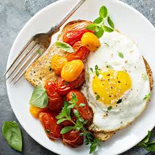

Organic salad with bread
A cream torte is like a cross between a cake, Vegetable with salt, pepper, a custard, and a dutch baby. The tender-sweet varieties of apples used better match for the delicate cake.

Egg-butter
Fry egg with olive oil, and mashed avocado with salt and pepper.Spread mashed avocado to the toasted bread, added cherry tomatoes and fried egg. Enjoy!

Cream of Apple
A cream torte is like a cross between a cake, a custard, and a dutch baby. The tender-sweet varieties of apples used here soften more readily than some when baked, making a better match for the delicate cake.